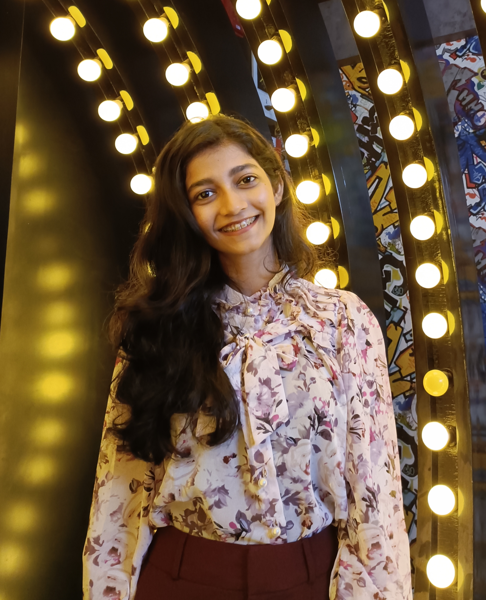

Hello Everybody, I Am
ARPITA DHAL
I am an aspiring Web Developer and I aim to persue my career in a professionally managed organisation.I am very passionate about improving my coding skills and developing applications and websites. I am currently working to improve my skill set.
